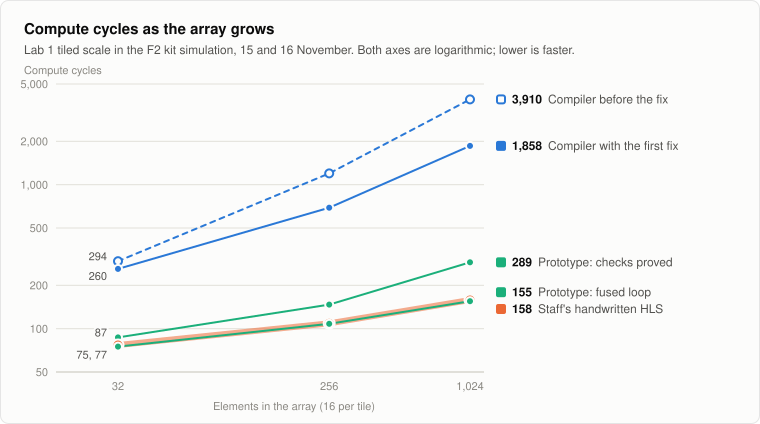

Making the compiler's
hardware fast
We measured where the compiled design loses its cycles, put the first fix into the compiler, and found the design change that closes the rest: build the hardware the way the original Spatial compiler does.
Last time I showed the first run on the FPGA: Lab 1 compiled from Python Spatial was correct but took about four times as many cycles as the staff's handwritten HLS. You asked about efficiency. This week was about that.
Four things happened. We measured where the cycles go, at larger sizes too, and the gap is worse than it looked. We put the first fix into the real compiler, under the full review routine, and measured it. Then today we found what the compiler really gets wrong: it never states its parallelism, so the vendor tool guesses, and at scale it guesses one lane. And we changed the design to follow the original Spatial compiler: no run-time checks in the hardware, and Spatial's schedules. Written that way and built by hand, Lab 1 matches the staff's design in the course's own flow. I'll also show a bug we found in the course's own wrapper.
The gap grows with the array
Lab 1's tiled scale in the F2 kit simulation, the step students run, beside the staff's handwritten HLS.

| Elements | Staff's HLS | Compiler output | Times as many |
|---|---|---|---|
| 32 | 77 | 294 | 3.8 |
| 256 | 109 | 1,198 | 11.0 |
| 1,024 | 158 | 3,910 | 24.7 |
- About 3.6 cycles for each extra element. The staff's design adds 1 to 2 cycles for each extra block of 16.
- One size hid it. Last week's comparison used 32 elements.
This is the same Lab 1 program at 32, 256 and 1,024 elements, in the kit's simulation, the make hw_sim step students run. Orange is the staff's handwritten HLS. Blue is what our compiler generated before this week. Both axes are logarithmic.
At 32 elements we were 3.8 times slower. At 1,024 we were almost 25 times slower. Our design cost about three and a half cycles per extra element; theirs costs one or two per extra block of sixteen. So the single size we measured last week understated the problem, and we now measure at three sizes as a rule. The green lines are compiler prototypes from the weekend; the lowest one, on the staff's line, has the structure we are now building, slide 6.
Memory traffic and one check, not arithmetic
Thirty-two multiplications take about 7 cycles. The rest is how the design talks to memory and how it checks itself.

- Six separate memory transfers where the staff's design makes two, overlapped. Each costs about 27 cycles of waiting.
- A check that every output was written, one element every two cycles.
| Version | Cycles |
|---|---|
| Compiler output before this week | 294 |
| The final check written so it can run in parallel | 257 |
| and no flags fetched for inputs the host says are fully set | 168 |
| and nothing copied that the run cannot change | 89 |
| and one pipelined loop that reads, multiplies and writes | 75 |
| Staff's handwritten HLS | 77 |
Where does the time go? Not arithmetic. Both designs multiply sixteen numbers at once, and the multiplications take about seven cycles.
The bar is our design at 1,024 elements. More than half is one check: at the end the kernel confirms every output element was written, one element every two cycles. The next part is the loop over tiles, and then six staged copies in and out of memory, where the staff's design makes two transfers that overlap.
On the right we changed the generated design by hand, one cause at a time, at 32 elements. Writing the final check so the tool can evaluate it in parallel: 294 to 257. Not fetching flags for inputs the host says are fully set: 168. Not copying what the run can't change: 89. And one pipelined loop: 75, level with the staff's 77. So at this size two causes: memory round trips, and a check whose cost grows with the data. At larger sizes there is a bigger one, which I'll come to on slide 5.
The first fix is in the compiler
The "was every output written?" check now rides in a copy loop the hardware already runs, sixteen flags at a time. Every result is exactly as before.
| Elements | Before | With the fix | Staff's HLS |
|---|---|---|---|
| 32 | 294 | 260 | 77 |
| 256 | 1,198 | 692 | 109 |
| 1,024 | 3,910 | 1,858 | 158 |
- Same answers. The generated hardware code, built on the Mac, matches both reference simulators on 116 hand-specified inputs.
- Written apart, agreed at once. Tests and code came from the plan separately and matched at the first merge.
- 40 of 42 planted bugs caught. The other two cannot change any result.
- Two fresh test sets written after the code was frozen; 2,640 automated tests pass.
This is the one that is real. As of last night the compiler itself generates this, merged after the full routine.
The change: the kernel no longer has a loop that checks, one element per trip, whether every output was written. The wrapper already runs a loop that copies the "written" flags back to memory, sixteen at a time, so the check now rides in that loop. The program's results are exactly what they were, including which fault is reported.
The numbers in blue were measured last night on the real compiler's output, in the kit simulation: 260, 692 and 1,858 cycles, where the old output took 294, 1,198 and 3,910. They equal the prototype's numbers exactly, and at 1,024 elements that is a little over twice as fast.
How do we know it's right? The generated hardware code, compiled on the Mac, gives the same results as both reference simulators on 116 inputs whose expected results were specified by hand. The tests and the code were written by separate authors from the plan and agreed the first time they met. Reviewers planted 42 bugs; 40 are caught and the other two can't change a result. And two fresh test sets were written after the code was frozen.
We did this one first because it needs nothing new: no proof, no change to the interface with the host. It is still far from the staff's 158.
The compiler never states its parallelism
Our C++ is a statement-by-statement translation of the program. Every lane, pipeline and memory layout in the hardware is whatever the vendor tool infers from it.
-
paris written out as a comment. No loop gets the lanes a program asks for. - At scale the tool infers one lane. After the first fix the compute loop does 16 elements a cycle at 32 elements, 1 a cycle at 256 and 1,024: 71 % of the cycles at 1,024.
- The cause: every check is an early exit. Each flag read decides whether to leave the loop, so the tool reads a tile's sixteen flags one per cycle.
- What we got wrong: we did not think in streams. We built the hardware as a program over buffers copied on chip and back, not as data streaming from memory through the compute and back. So we blamed the checks and planned a prover to remove them.
| Design | 32 | 256 | 1,024 |
|---|---|---|---|
| First fix in the compiler | 260 | 692 | 1,858 |
| Checks recorded instead of exiting prototype | 259 | 415 | 824 |
| and tiles streamed through one loop prototype | 165 | 278 | 737 |
| Staff's handwritten HLS | 77 | 109 | 158 |
After the first fix I had planned to prove checks away next. When I read the synthesis reports of the fixed design, the largest cost was somewhere else. Our C++ is a statement-by-statement translation of the program, and every bit of parallelism in the hardware is whatever the vendor tool infers. The language's par is parsed, checked, recorded, and then written out as a comment.
At 32 elements the tool happens to infer sixteen lanes for the compute loop. At 256 and 1,024 it infers one: the same loop is seventeen times slower per tile, and that is 71 percent of the cycles at 1,024. The schedule shows why. Every check is an early exit, so each flag read decides whether to leave the loop, and the tool reads a tile's sixteen flags one per cycle. The data reads, which no exit follows, all happen in one cycle.
So we tried prototypes that keep every check but change the structure. Recording a failed check instead of exiting: 1,858 down to 824. Streaming the tiles through one loop, still with every check: 737. The structure matters more than the checks. And the compiler has to decide it, as Spatial's compiler does with its unrolling and banking passes.
What was wrong with our earlier direction comes down to streaming, which we had not understood. We built the hardware like a program running over buffers: copy every input on chip, run the kernel, copy every output back, six memory phases one after another. Hardware wants the data to stream: read a tile while the previous one is computed and the one before is written, every stage overlapped. That is what Spatial's load, compute and store do in a pipelined loop, and what the staff's loop does. Because we didn't see that, we read the checks as the cost and planned a prover to remove them before we could fuse. But a streamed design with every check kept already beats every staged design we built.
Following the original Spatial compiler
Like Spatial's, our FPGA hardware now checks nothing at run time and keeps no
per-element flags; faults are found in the reference simulators. Loops follow Spatial's
schedules: Sequential runs one tile at a time,
Foreach pipelines, par is lanes.
| Design | 32 | 256 | 1,024 |
|---|---|---|---|
| Staff's handwritten HLS | 77 | 109 | 158 |
Lab 1 the Spatial way: Foreach over tiles,
par 16 inside prototype
|
75 | 77 | 156 |
| the same, as three concurrent stages prototype | 80 | 114 | 161 |
The course's source: Sequential, no par
being re-measured
|
– | – | – |
-
The course's Spatial asks for less.
Its Lab 1 says
Sequentialand nopar; the staff's HLS does whatForeachwithpar 16says. We compare against our own Spatial version that says it. - Same harness. Our file replaces the staff's: same ports, wrapper and test, every output word compared.
- Written by hand so far. The compiler change that generates it is in design review.
So we changed the design to follow the original Spatial compiler, which our research notes document pass by pass. Spatial's hardware checks nothing at run time and keeps no per-element valid bits; only its simulator does, and it logs and continues. We now do the same on the FPGA: on any input the reference simulators run to completion, the hardware gives their answer; faults are found in the simulators. The native route and both simulators keep every check. And loops follow Spatial's schedules: Sequential runs one tile at a time, Foreach pipelines and, around loads and stores, overlaps tiles, par is lanes.
That raised a question about the comparison itself. The course's own Spatial source for this lab says Sequential over the tiles and no par. Read as Spatial reads it, that is a slow schedule. The staff's handwritten HLS does what Foreach with par 16 says. So we wrote our own Spatial version that says it, and compare that with the staff's design.
To keep the comparison fair we ran it in the course's own flow: our file replaces the staff's, with the same ports, the course's wrapper and the course's test, which compares every output word. Written by hand the way the compiler will emit it: 75, 77 and 156 cycles against the staff's 77, 109 and 158. The 77 at 256 is the simulator's memory model; from 32 to 1,024 both designs rise by the same 81 cycles. As three concurrent stages joined by streams: 80, 114, 161.
Two lessons from the runs. A top that the tool turns into a self-restarting pipeline starts again by itself in the course's wrapper; the compiler's tops must never be one. And the first measurement of the course's Sequential source turned out to be wrong: the tool merged the two loops into one pipeline, so it was not Spatial's schedule. It is being measured again. The compiler change that generates all this is written up and in design review.
A bug in the course's wrapper
Run repeatedly without reloading the image, every single-loop design eventually returns wrong data, the course's own unmodified Lab 1 design included.
| Design, host program | Runs | Wrong |
|---|---|---|
| Staff's design, the course's own host program first wrong data on run 53 | 101 | 46 |
| Our fused loop, the course's protocol | 224 | 218 |
| Our staged compiler output, the course's protocol each wrong run followed by correct ones, no reload | 2,600 | 2 |
| Four designs, host writes confirmed or spaced | 2,000 | 0 |
- Certain, from the code: the wrapper's memory arbiter releases its lock too early and routes replies by whoever is selected, not by owner.
- Confirmed on the chip: after one run of the course's own test the AWS shell logs an unacknowledged host write. With writes confirmed, none.
- It starts before the test notices, and only a reload clears it. The staff's design lost host writes from run 5 but passed until run 23: its test writes the same data every run.
- Our chip counts were about 15 cycles low. With writes confirmed the staff's design takes 80 on the chip, 77 in simulation.
- Not explained: why our staged compiler output recovers without a reload.
One finding that isn't about our compiler. On the chip, one of our variants gave a wrong answer once in 58 runs. Chasing that, we ran each design's test over and over after a single image load. Every single-loop design eventually returns wrong data and keeps doing so until the image is reloaded. That includes the course's own Lab 1 design, unmodified, with the course's own host program: wrong from run 53.
Pausing between the program's phases doesn't help. What helps is never having two host writes in flight. One added line does it: the host reads back each word before writing the next. With that, 1,400 runs of four designs, none wrong. Last night a short pause after every write did the same: 600 runs of two designs, none wrong.
The cause, as far as we can establish it: the wrapper has a small arbiter that shares the memory between the host and the kernel. It releases its lock at the first acknowledgement without counting the writes in flight, and it routes acknowledgements by whoever is selected, not by owner. The shell allows the host 32 writes in flight, so that is wrong for ordinary traffic. A cycle-level model of those lines reproduces the kernel reporting done early and the layout of the first wrong outputs. And last night we checked it on the chip with the AWS shell's own error counters: after a single run of the course's test, the shell records a host write that never received its acknowledgement, at the last address the program wrote. With the one-line change it records none.
Three more things from last night. Once the failure starts, switching to the safe host program does not help; only reloading the image does. It also starts earlier than the test shows: reading the counters after every run, the staff's design was losing host writes from run 5 and still passed until run 23, because the test writes the same data every time. And our own staged design is not immune, as I thought on Sunday: two wrong runs in 2,600, and one stretch of lost writes. But it recovered without a reload, and that we cannot yet explain.
A side effect matters for our numbers: with the course's host program the kernel reports done about fifteen cycles early. So the chip counts I showed last week were each too low; the simulation counts are the ones to quote. I have a short note drafted for the course staff if you think it should go to them.
One more from today, in simulation rather than on the chip. When one of our prototype tops restarted by itself, its second run's memory traffic overlapped the host reading results back, and the host received read data it had not asked for, the protocol checker flagging it. That fits the same arbiter routing replies by whoever is selected. It is an observation, not a reproduction: it was not set up on purpose.
The plan, and four questions
First fix in the compiler
Measured: 1,858 at 1,024 elements.
Spatial-style design, by hand
Matches the staff in the course's flow.
The compiler generates it
Schedules, lanes and layouts decided before the C++ is written.
Measured in the course's flow
Both Lab 1 versions, three sizes, beside the staff's.
Stages joined by streams, then the chip
FPGA build and a long soak with a safe host program.
- No checks in the hardware. Like Spatial, faults are now found only in the simulators, not on the FPGA. Is that right for the class?
-
Which Lab 1 to compare.
The course's Spatial says
Sequentialand nopar; we compare our own version against the staff's HLS. Is that right, or should the lab's Spatial change? - Metapipelines in Vitis. Spatial's double-buffered stages map poorly for small tiles; one fused loop and streams both work. Start with stages that read tiles in order?
- The wrapper. Who on the course staff should hear about it?
The plan. The first fix is done and measured. The Spatial-style design is done by hand and matches the staff's in the course's own flow. Next, the compiler generates it: a new FPGA route that decides schedules, lanes and memory layouts before writing any C++, under the full review routine. Its plan was reviewed today and is being revised. Then we measure the compiler's own output in the course's flow, both Lab 1 versions at three sizes beside the staff's design. After that, stages joined by streams for the cases one fused loop cannot cover, and the first FPGA build and a long soak on the chip with a host program that avoids the wrapper bug.
We changed how we work, too. Every plan now states, for each loop, how many elements it handles a cycle and the memory layout that allows it, and the synthesis report is read at every size before anyone proposes a large mechanism. The proving work from the weekend is not lost; it can still serve the native route, but it is no longer on the path to speed.
Four questions. First: no checks in the hardware, as in Spatial, with faults found only in the simulators. Is that right for the class? Second: the course's Spatial for this lab says Sequential and no par, so we compare our own Spatial version with the staff's HLS. Is that the right comparison, or should the lab's Spatial change? Third: Spatial's double-buffered metapipelines don't map well onto Vitis for small tiles; would you start with stages that read tiles in order? Fourth: who on the staff should hear about the wrapper.